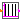
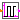

Utility components that are usually not directly used
This package contains utility blocks that are usually not directly utilized but are used as building blocks for "higher level" blocks.
Extends from Modelica.Icons.Package (Icon for standard packages).
| Name | Description |
|---|---|
| UpSample | Upsample the clocked Integer input signal and provide it as clocked output signal |
|  AssignClockToTriggerHold | Generate a Boolean continuous-time trigger signal from a clocked Integer input |
|  AssignClockToSquareWaveHold | Generate a Boolean continuous-time square signal from a clocked Integer input |
Upsample the clocked Integer input signal and provide it as clocked output signal
This block for Integer signals works similarly as the corresponding block for Real signals (see RealSignals.Sampler.Utilities.UpSample).
Analog to the corresponding Real signal block example there exists an elementary example for this Integer block.
| Name | Description |
|---|---|
| inferFactor | = true, if upsampling factor is inferred |
| factor | Upsampling factor >= 1 (if inferFactor=false) |
| Name | Description |
|---|---|
| u | Connector of clocked, Integer input signal |
| y | Connector of clocked, Integer output signal (clock of y is faster as clock of u) |
Generate a Boolean continuous-time trigger signal from a clocked Integer input
This block for Integer signals works similar as the corresponding block for Real signals (see RealSignals.Sampler.Utilities.AssignClockToTriggerHold).
Extends from Modelica_Synchronous.ClockSignals.Interfaces.ClockedBlockIcon (Basic graphical layout of block where at least one input or output is a clocked variable).
| Name | Description |
|---|---|
| y_start | Initial value of output signal |
| Name | Description |
|---|---|
| u | |
| y | Connector of Boolean output signal |
Generate a Boolean continuous-time square signal from a clocked Integer input
This block for Integer signals works similar as the corresponding block for Real signals (see RealSignals.Sampler.Utilities.AssignClockToSquareWaveHold).
Extends from Modelica_Synchronous.ClockSignals.Interfaces.ClockedBlockIcon (Basic graphical layout of block where at least one input or output is a clocked variable).
| Name | Description |
|---|---|
| y_start | Initial value of output signal |
| Name | Description |
|---|---|
| u | |
| y | Connector of Boolean output signal |